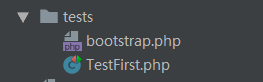
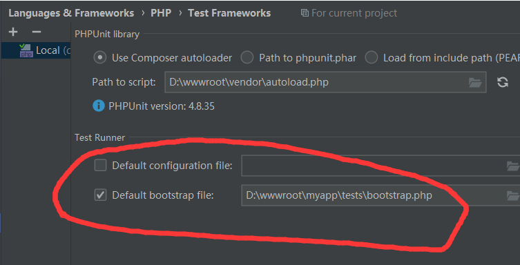

单元测试
在前后端分离的团队开发中，单元测试对于后端开发，可以不需要联调就能测试自己的代码逻辑，比较重要。
1、如何使用单元测试
首先，我们需要安装单元测试程序，比如PHPUnit，安装过程请看官方教程。
然后就按照下面的方法开始单元测试。
2、如何开始单元测试
在单元测试时，最主要的问题是如何加载框架，从而在单元测试的代码中能够使用框架。
加载框架，要用到\Ocara\Invoke类。
（1）要加载框架的system/core/Invoke.php文件，如下实例:
/*
require_once __DIR__ . '/../../vendor/linyihu/ocara/system/core/Invoke.php';
（2）要使用Invoke::init()方法初始化。
实例如下：
require_once __DIR__ . '/../../vendor/linyihu/ocara/system/core/Invoke.php';
define('OC_ROOT', dirname(__DIR__) . '/');
$invoke = (new Invoke());
$invoke->init();
（3）在单元测试代码中可以调用控制器或类
除了使用框架中的相关类和函数，可以使用Invoke::run()来执行某一个控制器动作。
Action有返回值，如下实例：
$users = Invoke::run('home/getUsers');
Action无返回值，如下实例：
Invoke::run('home/index', array(), false);
3、实例
假设已经安装了PHPUnit，在我们的应用根目录中新建tests目录，里面添加一个TestFirst.文件，截图如下：
 文件内容如下:
文件内容如下:
use PHPUnit\Framework\TestCase;
use Ocara\Core\Invoke;
use dal\models\Users;
class TestFirst extends TestCase
{
public function testOne(){
Invoke::run('home/index');
print_r(333);die;
die;
}
public function testUser(){
$user = new Users();
print_r($user->findRow(1));
}
}
然后，新建home控制器的index动作。
namespace app\modules\index\controllers\home;
use app\modules\index\controllers\home\Controller;
use app\dal\models\main\User;
class IndexAction extends Controller
{
/**
* 初始化
*/
public function _action()
{
$user = User::select(1);
$user->username = 'ddd3355';
$user->save();
ocPrint($user->toArray());
}
}
最后，使用编辑器（这里假设使用的是phpstorm）来运行该testA()方法.
将鼠标指针放到testA()方法中，并且右击选择“Run TestFirst.testA”运行，就可以看到该单元测试运行结果，打印出user_id为1的记录数据。
 友情提醒： 您也可以将加载框架的代码写在一个bootstrap.php文件中，如下所示：
友情提醒： 您也可以将加载框架的代码写在一个bootstrap.php文件中，如下所示：

然后在设置单元测试时选择启动文件为该文件就可以直接用单元测试了，不需要每个文件都写上加载代码：
